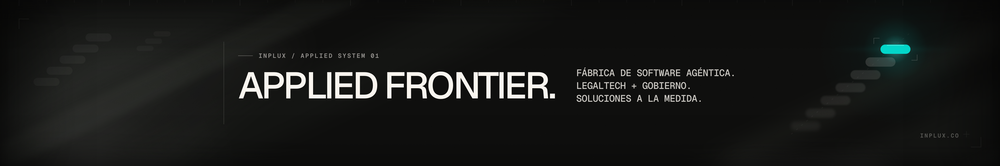
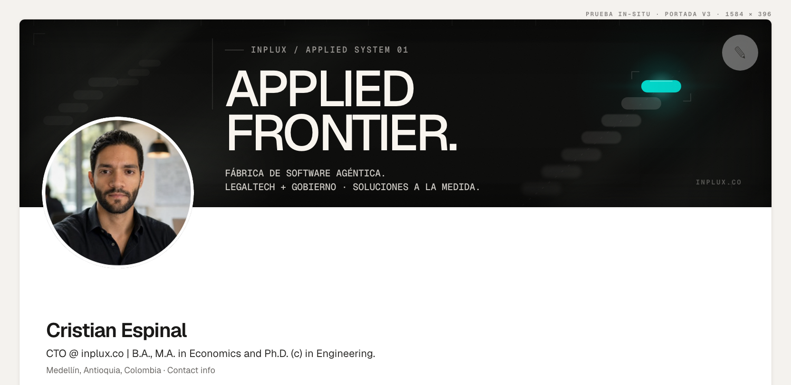
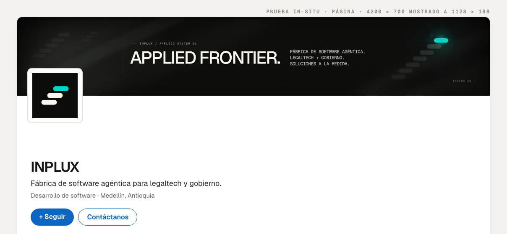

APPLIED FRONTIER. — LinkedIn v3
01 · Perfil personal 1584 × 396 · 4:1

02 · Página de empresa 4200 × 700 · 6:1

03 · In-situ perfil foto y botón en su posición real

04 · In-situ Página

Lo que resuelve v3
El maestro v2 era 6:1 sobre un perfil que es 4:1. LinkedIn recortaba 700 px por lado y el titular caía bajo la foto. v3 tiene un maestro por destino.
Zonas de exclusión
Avatar centro (207, 365) r 160, holgura r 186. Botón editar x 1462–1560. El exportador falla si un nodo de texto entra en cualquiera de las dos.
Profundidad
Caída de foco a lo largo de la traza: siete estados, del más desenfocado al líder perfectamente nítido. La geometría canónica nunca se deforma.
Grano
Dither procedural contra el bandeo de la recompresión JPEG de LinkedIn. No hay ninguna textura raster importada en las portadas.